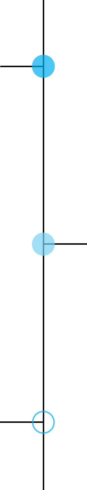

採用広報でこんな悩みを持っていませんか？
その悩み Nagoya Startup PR に
お任せください！

Nagoya Startup PR が企画・コンテンツ制作・チェックを行い、
運用までサポートします。
こんなことが出来ます！
- 魅力的募集要項の作成
- 社内インタビュー記事の執筆
- オフィスやプロフィール写真の撮影
- ターゲットとなる求職者へのアプローチ
- 求人媒体の運用・サポート
- ＳＮＳでの発信
- 縁故採用の強化
その他、御社のご希望の添って、柔軟にご提案・ご対応いたします。
ご興味のある方
お気軽にご相談ください。
Nagoya Startup PR はここが違います！
自社メディア”Nagoya Startup News”を運営する中で
蓄積された豊富な情報データベースと、独自のコネクションを最大限に活かし、
御社が求める人材に効果的なアプローチができるよう採用広報をサポートいたします。
コンテンツ制作フロー

企画
採用広報コンテンツ制作のためのヒアリングを行います。
御社の社風・サービス内容・競合他社との違いなどから、
御社ならではの強みを引き出します。
「求人を出すのは初めて」「どんなことを書けばいいのかわからない」
という方にも、ヒアリング内容をもとにコンテンツをご提案いたします。
コンテンツ制作
ヒアリングした内容から、
募集要項や社内インタビュー記事を作成します。
弊社では複数メディアの運営をしており、ライティングのノウハウを持ったライターが所属しております。
記事の執筆はおまかせください。さらに、コンテンツをより一層魅力的にするための写真撮影や、SNSの発信もサポートいたします。
チェック・運用
制作したコンテンツを検証しながら、
運用までサポートいたします。
コンテンツの改善やコンサルティングを行い、求める人材に対して効果的にアプローチできるようサポートいたします。
採用広報に人的リソースが割けない企業様には、弊社が企画から運用までワンストップでサポートいたします。